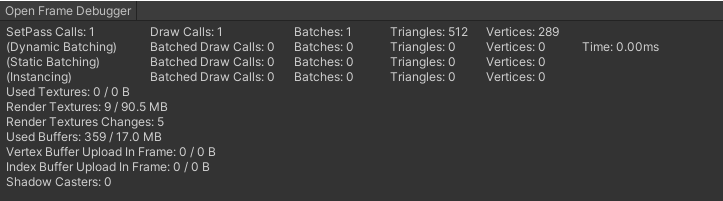
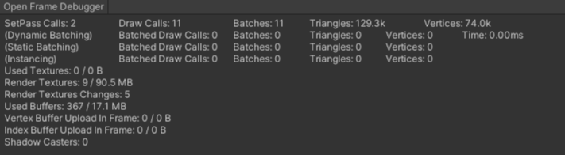
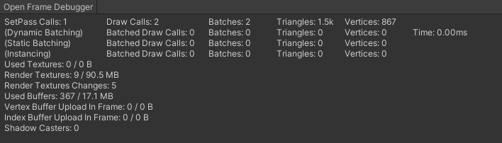

Tiny Test
Description
In this test, the terrain is made small and at a distance. This tests rendering the whole terrain, but minimizes fillrate.
Frame Debugger

Android OVRMT Results
WebGL OVRMT Results
Half-Filled View
Description
In this test, the terrain is at normal scale and the view is as if the user was standing on the terrain and looking straight forward. This tests rendering the terrain such that it fills about half the view. This could be considered nominal behaviour.
Frame Debugger

Android OVRMT Results
WebGL OVRMT Results
Filled View
Description
Frame Debugger

Android OVRMT Results
WebGL OVRMT Results
Conclusions
General
- The Tiny Terrain test demonstrates the terrain has minimal effect on GPU or CPU when it does not take up much of the screen.
- Since the Tiny Terrain test had minimal effect, an increase in load is due to shader complexity.
- The terrain took 50% more GPU than the simple quad.
Android
- The terrain took 50% more GPU than the simple quad.
- Half fill: from 20% to 33%
- Full fill: from 35% to 50%
- The CPU load did not change relative to the Empty Scene, regardless of how much of the terrain was displayed.
WebGL
- The terrain took 50% more GPU than the simple quad.
- Half fill: from 40% to 60%
- Full fill: from 60% to 90%
- The CPU load did not change relative to how much of the terrain was displayed, but did generally increase the CPU load 25% (from 40% to 50%)

{kind=link}
{kind=link}
{kind=link}
{kind=link}
{kind=link}
{kind=link}
{kind=link}
{kind=link}
{kind=link}